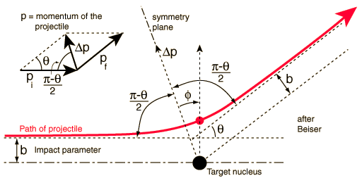

Rutherford ScatteringAlpha particles from a radioactive source were allowed to strike a thin gold foil. Alpha particles produce a tiny, but visible flash of light when they strike a fluorescent screen. Surprisingly, alpha particles were found at large deflection angles and some were even found to be back-scattered.This experiment showed that the positive matter in atoms was concentrated in an incredibly small volume and gave birth to the idea of the nuclear atom. In so doing, it represented one of the great turning points in our understanding of nature. If the gold foil were 1 micrometer thick, then using the diameter of the gold atom from the periodic table suggests that the foil is about 2800 atoms thick.
|
Index Rutherford concepts Scattering concepts Great experiments of physics | |||
|
Go Back |
Rutherford Scattering FormulaThe scattering of alpha particles from nuclei can be modeled from the Coulomb force and treated as an orbit. The scattering process can be treated statistically in terms of the cross-section for interaction with a nucleus which is considered to be a point charge Ze. For a detector at a specific angle with respect to the incident beam, the number of particles per unit area striking the detector is given by the Rutherford formula:The predicted variation of detected alphas with angle is followed closely by the Geiger-Marsden data. The above form includes the cross-section for scattering for a given nucleus and the nature of the scattering film to get the scattered fraction. Another common form for the Rutherford equation is just the differential cross section for scattering from a given nucleus. For this equation, some of the constants have been combined to express the cross section in terms of the fine-structure constant, a .
The departure from the point-particle form of scattering has been an indicator of nuclear structure and then at higher energies, the structure of the proton. |
Index Rutherford concepts Scattering concepts | ||
|
Go Back |
Alpha Scattering GeometryThe scattering of the alpha particle by the central repulsive Coulomb force leads to a hyperbolic trajectory. From the scattering angle and momentum, one can calculate the impact parameter and closest approach to the target nucleus.
Calculation of impact parameter and closest approachCross section for scattering |
Index Rutherford concepts Scattering concepts Beiser reference | ||
|
Go Back |